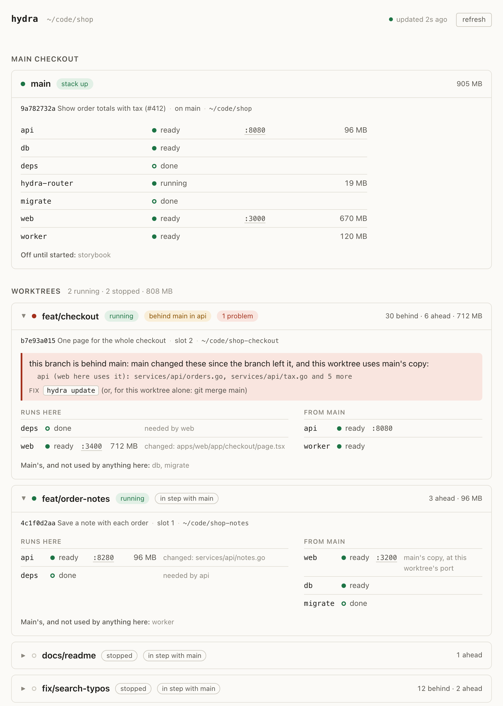

hydra docs
hydra wraps process-compose. One baseline stack runs in your main checkout. Each git worktree starts only the services it changed and points everything else at the baseline.
It exists for working on several branches at once, often with a coding agent in each worktree. Five copies of a full stack cost five times the memory and fight over the same ports. With hydra, a frontend-only branch runs one extra process.
Install
hydra needs git and process-compose. The Homebrew formula installs process-compose for you.
$ brew tap santiagotoscanini/tap $ brew install --HEAD santiagotoscanini/tap/hydra $ brew upgrade --fetch-HEAD santiagotoscanini/tap/hydra # later, to update
To build from source, clone the repository and run make link. It puts that checkout's build on your PATH as hydra; make unlink removes it.
Quick start
1. Describe your services
Add x-hydra keys to the process-compose.yaml you already have: a block at the top level, and one on each process that a worktree may run. process-compose ignores keys it doesn't know, so the file still works without hydra.
version: "0.5"
x-hydra:
slot_stride: 200
reserved_ports: [5432]
global_paths: [pnpm-lock.yaml]
processes:
db:
command: docker compose up postgres
x-hydra:
shared: true
paths: ["db/migrations/**"]
deps:
command: pnpm install
x-hydra:
follow: true
api:
command: go run ./services/api
depends_on:
db: { condition: process_healthy }
x-hydra:
port: 8080
port_env: API_PORT
paths: ["services/api/**", "packages/shared/**", "!**/*_test.go"]
worker:
command: go run ./services/worker
depends_on:
db: { condition: process_healthy }
x-hydra:
paths: ["services/worker/**", "packages/shared/**"]
url: "jobs-{slot}"
baseline_url: jobs
upstreams:
API_URL: api
web:
command: pnpm --filter web dev
depends_on:
deps: { condition: process_completed_successfully }
api: { condition: process_started }
x-hydra:
port: 3000
paths: ["apps/web/**", "packages/shared/**"]
routed: node
upstreams:
API_URL: api
JOBS_QUEUE: worker
NEXT_PUBLIC_SITE_URL: web
Each service has to read its port and its upstreams from the environment variables named here. hydra sets those variables. It only sits between two services for one marked routed, like web here: see one copy for every worktree.
2. Start the baseline
In the main checkout, hydra runs the whole file, as process-compose would. This stack is the one every worktree builds on, so it stays still: it changes when you run hydra update, and not otherwise.
$ cd ~/code/shop $ hydra up -D # or plain `hydra` for the TUI $ hydra status # everything up?
3. Start a worktree
$ git worktree add ../shop-checkout -b feat/checkout $ cd ../shop-checkout $ hydra plan # what would run here, and why $ hydra up -D # run it; it stops with the reason if main isn't ready for it $ hydra status # is everything this worktree uses up, and in step with main?
A fresh worktree has changed nothing, so nothing runs in it yet. Because web is routed, port 3200 already answers: it is main's copy. Edit a file under apps/web and the worktree's own web takes that port, pointed at the baseline API on 8080.
worktree, slot 1: ~/code/shop-checkout SERVICE RUNS PORT WHY api baseline 8080 unchanged db baseline - shared deps here - needed by web web here 3200 changed: apps/web/app/page.tsx worker baseline - unchanged wiring: web API_URL -> api (baseline) http://127.0.0.1:8080 default: api not running here web JOBS_QUEUE -> worker (baseline) jobs default: worker not running here web NEXT_PUBLIC_SITE_URL -> web (local) http://127.0.0.1:3200 default: web running here
.process-compose/ and .hydra.local.yaml to your .gitignore. If your process-compose.yaml is itself git-ignored, a worktree without one uses the main checkout's.Concepts
| Term | Meaning |
|---|---|
| Baseline | The stack running in the main checkout. It runs every service on its normal port. |
| Worktree | Any other checkout made with git worktree add. It runs only what it changed. |
| Slot | A number per worktree. The baseline is slot 0. Slot N listens on each port plus N × slot_stride. |
| Upstream | An environment variable of one service that says where another service lives. hydra fills it with the local copy's address or the baseline's. |
| Shared | A service that only ever runs in the baseline, such as a database or a tunnel. |
| Follow | A service that runs in a worktree whenever a local service depends on it, such as pnpm install. |
| Stand-in | A placeholder process for a baseline service that a local one depends on. It runs nothing and only waits for the baseline's copy to be ready. |
How it works
hydra runs no services itself. It works out what should run in this checkout, writes an ordinary process-compose file for it, and hands that file to process-compose. In a worktree, hydra does this:
- Lists the files the worktree changed and picks the services to run here.
- Takes a slot for the worktree, which it keeps across runs.
- Checks the main checkout: its stack is running, the services this worktree takes from it are up, and they are the version the branch was built on. If not, it says what is wrong and how to fix it, and doesn't start.
hydra up --forcestarts anyway. - Writes
.process-compose/hydra.yaml: those services only, on the slot's ports, with each upstream variable set. - Starts process-compose on that file, on a unix socket that belongs to this worktree.
Because of the socket, hydra down, hydra attach and hydra process … in a worktree reach that worktree's instance and never the baseline's.
The whole model is three sentences:
- The main checkout runs the one full stack, and it only changes when you run
hydra update. - A worktree runs what its branch changed and takes the rest from main.
hydra statussays when either isn't true, with the command that fixes it, andhydra upwon't start a worktree on top of something broken.
What differs in the main checkout
- No file watching. process-compose
watchblocks are dropped there. Main's code only changes onhydra update, which restarts what changed in order. A watcher would restart a service in the middle of a pull, before its migrations ran. baseline_commandreplaces a process'scommandthere, for a build that suits a checkout nobody edits.
The same stack whoever starts it
hydra starts process-compose without the variables that mark an AI agent's shell (AI_AGENT, CLAUDECODE, CLAUDE_CODE_*, CURSOR_AGENT and the like). Dev servers act on them: Next.js prints a notice for agents and exits on its first start. A stack an agent started would otherwise behave differently from the one you start.
What counts as changed
A worktree changed a service when a file that differs from where its branch left main matches one of the service's paths. Committed, staged, unstaged and new files all count. Git-ignored files don't.
$ git diff --name-only $(git merge-base HEAD main origin/main) # committed, staged, unstaged $ git ls-files --others --exclude-standard # new files
The remote-tracking branch counts as well as the local one, because a local main is often behind. A branch cut from a freshly fetched origin/main forked there, and the commits merged in between aren't its work.
main here stands for the repository's default branch. hydra reads it from git, and base_ref names another.
Changed files that no service lists
A changed file outside every service's paths starts nothing, and you keep getting main's copy of the code you changed. hydra plan and hydra status name such files. List what belongs to no service (docs, CI, other apps) under ignore, and what is left is a path someone forgot.
note: changed, but in no service's paths, so nothing runs here for them: packages/billing/src/tax.ts
Checking
hydra status answers one question: can I trust what runs here? It plans the checkout, then asks both process-compose servers what is really running.
main ~/code/shop on main at 9a782732a stack up
worktree ~/code/shop-cart cart, slot 2 stack up
SERVICE RUNS PORT STATE
api here 8400 ready
db main - ready
deps here - done
web main, routed 3400 ready
✗ this branch is behind main: main changed these since the branch left it, and this worktree uses main's copy:
web (it serves this worktree's api): apps/web/app/cart.tsx and 11 more
fix: hydra update (or, for this worktree alone: git merge main)
A line marked ✗ is an error: the command exits 1, and hydra up won't start the worktree. A line marked ! is a note. Each comes with the command that fixes it.
| Checked | Error when |
|---|---|
| Main's stack | Nothing answers where it was started. |
| What this worktree takes from main | A service it calls, waits for or is routed to has failed or was stopped. The end of its log is shown. |
| Main's stack against main's files | The checkout moved without hydra update, and a process this worktree uses still runs the old code. |
| The branch against main | They disagree on a service the worktree takes from main. See in step with main. |
| This worktree's stack | A process that should run here failed, was skipped or isn't running. For a skipped one, the step it waited for is shown. |
| Routed services | Main's copy can't serve this worktree: the router isn't listening on its port, or the copy doesn't pass the worktree's mark on. |
Notes cover what is still starting, a stack file newer than the running stack, a main checkout that is on another branch or has uncommitted changes, and changed files that no service lists.
| Flag | Meaning |
|---|---|
--wait | First wait for what is still starting, then report. After hydra up -D, this is "tell me when it is ready, or what broke". |
--timeout D | How long --wait waits. The default is 10m. |
--all | The main checkout's stack and one line per worktree: what it runs, whether its stack is up, where it stands against main. In the main checkout this is the default. |
The watcher runs two of these checks all the time. It writes to the worktree's log when main's stack stops answering and when the branch falls out of step with main.
In the browser
hydra ui opens a local page with the same facts for the main checkout and every worktree at once: which services each one runs and which it takes from main, their state, their ports as links, the memory each holds, the commit each is on, how far it is from main, and the problems with their fixes. The page keeps itself up to date and only reads.

| Flag | Meaning |
|---|---|
--port N | Where it listens on 127.0.0.1. The default is 4937. A second repository's page takes the next free port; a second hydra ui for the same repository opens the first. |
--no-open | Don't open the browser. |
Run it when you want it, from any checkout. To have it up whenever main's stack is, add it to the stack file as one more process:
hydra-ui: command: hydra ui --no-open
Process states and memory are read every few seconds. What a worktree would run takes git a walk of its working tree, so that part is worked out again every 10 seconds while the worktree's stack is up and every 90 seconds otherwise; the page's refresh button does it at once.
Watching
The generated file has one extra process, hydra-watch. It starts with the services and stops with them. Every 2 seconds it lists the changed files again. When the set of services to run differs, it rewrites the file and calls process-compose project update, which touches only the processes that differ.
| Transition | What happens |
|---|---|
| Unchanged → changed | The service starts in the worktree. Local services that point at it restart with its address. |
| Changed → unchanged | The service stops. Local services that pointed at it restart on the baseline's address. |
Those are the only two things the watcher does. Further edits to a service that already runs here are left to the service's own reload, such as next dev, air or process-compose's watch.
The watcher polls git instead of watching the file system. Only git can answer "does this differ from main": a revert has to stop the service, and ignored files such as node_modules must not start one. It reads git without taking the index lock, so it doesn't collide with an agent committing in the same worktree.
In step with main
A worktree's web from last week calling main's api from today can fail for reasons that have nothing to do with the branch. hydra looks for exactly that. It takes the commit where the branch left main and the commit the main checkout has now, and lists the files that differ between them. Then it looks at the services the worktree takes from main:
- the ones a service running here calls or waits for;
- a routed service whose calls land in this worktree.
If one of those files belongs to one of those services, the two sides are out of step.
| Which side is older | How it happens | Fix |
|---|---|---|
| The branch is behind main | Main was updated after the branch was cut. | hydra update, or git merge main for this worktree alone. |
| Main is behind the branch | The worktree was cut from a freshly fetched origin/main that the main checkout hasn't pulled. | hydra update |
Not counted: services the worktree runs itself, however old the branch, since they run the branch's code. And two services that both run in main are in step with each other whatever the branch did. So a branch that is 300 commits behind, where main only changed other things, is in step.
Nothing is started or stopped because of this. hydra reports it and hydra up refuses to build on it; bringing the two sides together is a merge, which is yours to make or to hand to hydra update.
Updating main
Worktrees take the services the main checkout is running, so main moves only when you say so. Turn off whatever pulls it by itself, such as an editor's or agent app's auto-pull, or a cron job. Fetches are harmless: they move origin/main, not the checked-out files.
$ hydra update --dry-run # what it would do $ hydra update
- It pulls main, fast-forward only. It stops if the main checkout is on another branch or has uncommitted changes.
- It brings main's stack to the new commit. If the stack file changed, it is reloaded. Then every process whose
pathsmatch a file the new commits changed is restarted, independs_onorder, and waited for: a job such aspnpm installor migrations until it finishes, a service until it is ready. The first failure stops the sequence, so no service starts on migrations that didn't apply. - It merges main into every worktree that is behind it. It tries each merge in memory first. A branch with no commits of its own is fast-forwarded. A clean merge is made. Everything else is left alone, with the reason: a conflict (the files, and the command to run), uncommitted changes, a branch whose changes are all in main already. Where a worktree's stack is running, what the merge touched is restarted there.
main ~/code/shop moved f67f0e32d → 9a782732a (30 commits)
main's stack
migrate ran again db/migrations/0042_orders.sql and 2 more done in 6s
api restarted services/api/handler.go and 207 more ready in 9s
web restarted apps/web/app/page.tsx and 242 more ready in 31s
worktrees
cart cart main merged in (30 commits); restarted there: api
checkout checkout CONFLICTS with main in 2 files (37 commits behind)
search search left alone, 30 commits behind main: 1 file with uncommitted changes
~/code/shop-checkout
conflict: apps/web/app/checkout/page.tsx
conflict: apps/web/lib/cart.ts
resolve: git -C ~/code/shop-checkout merge main
Jobs take part through their paths
Give the migrations job the migrations folder and the install job the lockfile. An update runs them again when a pull changes those files, before the services that wait for them.
deps:
command: pnpm install --frozen-lockfile
x-hydra: { follow: true, paths: ["pnpm-lock.yaml"] }
migrate:
command: ./migrate up
x-hydra: { shared: true, paths: ["db/migrations/**"] }
What an update never does
- Resolve a conflict, rewrite a commit, push, or touch a worktree with uncommitted work.
- Restart a daemon (
is_daemon: true, a database): it holds data. It says when a daemon's files changed and nothing else picked them up. - Start a process that is
disabled: true. One that someone has running is restarted like the rest.
When main moved some other way
hydra remembers the commit main's stack was last brought to. If someone pulls main by hand, hydra status lists the processes that still run the old code, and hydra update restarts exactly those. A stack hydra has no record for is restarted once in full.
| Flag | Meaning |
|---|---|
-n, --dry-run | Say what would happen, including which processes a reload of the stack file changes, adds, drops or switches on. Change nothing. |
--main-only | Leave the worktrees alone. |
--no-pull | Don't pull. Bring the stack and the worktrees to where main already is. |
--timeout D | How long one process may take to come back. The default is 15m. |
Stacked branches
Worktrees can be stacked: b1 cut from main, b2 from b1, b3 from b2, each in its own worktree. Run hydra in b3 and it walks the chain down to main.
| Layer | Compared with | Its diff holds | Runs |
|---|---|---|---|
b1 | where it left main | b1's work | api, from b1's worktree |
b2 | where it left b1 | b2's work, not b1's | worker, from b2's worktree |
b3 | where it left b2 | b3's work only | web, from b3's worktree |
- A service runs from the topmost layer that changed it, in that layer's worktree. An agent editing b2's worktree reaches the worker through the worker's own reload.
- Everything runs in b3's process-compose project: one slot, one set of logs. b1 and b2 don't need to run
hydrathemselves. - The watcher polls every worktree in the stack, so an edit in b1's worktree starts or stops services in b3's project.
- Follow services run once per worktree that has a local service, so each one installs into its own
node_modules.
How a parent is found
parent:in the worktree's.hydra.local.yaml. The base branch there means "not stacked".- The branch it was created from, read from its reflog, if that branch is checked out in a worktree and still shares commits with it past
main. This holds after the parent gets new commits. - Otherwise, the deepest checked-out branch whose tip it contains.
Branches that only share history are not parents. Two siblings cut from the same commit look, from ancestry alone, the same as a parent that moved on, so hydra doesn't guess. A branch made with git checkout -b b2 while on b1 records "Created from HEAD"; once b1 gets new commits, give b2 a parent: b1.
hydra plan prints the stack it found and why each service runs where it does.
One copy for every worktree
A worktree that changed only the API has nothing in front of it: the frontend runs in main and calls main's API. Running a second frontend there works, but a dev server is the expensive process in a stack. A service marked routed keeps one copy, the baseline's, for every worktree that didn't change it.
web:
x-hydra:
port: 3000
routed: node
upstreams:
API_URL: api
| Step | What happens |
|---|---|
You open localhost:3400 | Slot 2's port for web. The worktree didn't change web, so hydra's router listens there. It sets X-Hydra-Worktree: 2 and passes the request to main's web on 3000. |
Main's web calls the API | In the baseline, a routed service's API_URL points at the router. The call carries the header of the request being served. |
| The router picks the API | Slot 2's API on 8480 if that worktree runs one, main's on 8080 otherwise. The response says which in X-Hydra-Served-By. |
The router is one more process in the baseline's project, hydra-router. Each running worktree tells it what it runs, and hydra down in a worktree closes that worktree's ports. When a worktree later changes web, the router hands the port over and the worktree's own copy listens there, so a worktree's address for web never changes.
Passing the header on
The routed service has to copy the header from the request it is serving onto the calls it makes.
routed: node: hydra loads a preload script into the Node process (throughNODE_OPTIONS) that does it forfetchandnode:http. The app isn't changed. For Next.js it also keeps the data cache apart per worktree, so a cached response from one worktree's API is never served to another.routed: true: the service forwardsX-Hydra-Worktreeitself. That is a few lines of middleware in any language.
With routed: node the router checks this before a worktree may use the copy: it sends a request with a made-up mark and compares what arrives at its own ports. If the mark is lost, the worktree's port answers 503 with the reason, and hydra up web gives that worktree a copy of its own.
What can't be routed
A proxy routes requests. It can do nothing about a value the service reads once from its environment, such as a queue name or a database URL. If a service has an upstream like that pointing at something the worktree runs, hydra starts the service in the worktree after all, routed or not, and hydra plan says why. A worktree with its own database therefore runs its own API and frontend too.
Temporal is handled for you: an upstream pointing at a kind: temporal worker is switched per request, inside the Temporal SDK, so the app isn't changed. The router checks the switch before a worktree may use the copy.
For any other value, mark the upstream per_request: true and have the app read it per request where it used to read the environment:
upstreams:
JOBS_QUEUE: { service: worker, per_request: true }
const queue = globalThis.__hydra?.upstream('JOBS_QUEUE') ?? process.env.JOBS_QUEUE
Not routed: HTTP/2 and gRPC between services, work that no request is behind (a timer started at boot, a webhook from outside), and unchanged services that aren't marked routed, which keep calling the baseline's copies.
The generated file
hydra render prints what hydra hands to process-compose. Compared with your file:
- Only the services that run here are kept, with the
x-hydrakeys removed. - Each service's
environmentgains its port variable, its upstream variables, andHYDRA_SERVICE,HYDRA_SLOTandHYDRA_UPSTREAMS. working_dir,log_locationandwatchpaths become absolute, pointing into the worktree the service runs from.- Readiness and liveness probes on the baseline port move to the slot's port. Otherwise a worktree's probe would hit the baseline's copy and pass at once.
- A stand-in replaces every baseline process that a local one depends on. It copies only the readiness probe or ready log line, so
process_healthywaits for the baseline's database instead of starting a second one. Stopping the worktree never runs the baseline's shutdown commands. - A
hydra-prepare-<service>step runs before each service that hasprepare. - In the baseline, when a service is
routed: ahydra-routerprocess is added, and the routed service's HTTP upstreams point at it.
hydra relies on the process environment winning over .env files. That holds for Next.js and for godotenv; check it for other loaders.
Slots and ports
Slots live in hydra-slots.json inside the repository's shared .git directory, guarded by a file lock. A worktree keeps its slot across runs, and the entry of a deleted worktree is dropped.
When the config loads, hydra works out every service's port for every slot up to max_slots and fails if two of them meet or if one lands on a reserved port. Pick a slot_stride larger than the distance between your closest base ports, and list the ports of shared infrastructure in reserved_ports.
$ hydra slots # which worktree has which slot $ hydra slots free # free this worktree's slot
Stack options
The top-level x-hydra block. A file without it runs unchanged.
| Key | Default | Description |
|---|---|---|
base_refstring | detected | The branch a worktree is compared with. Left out, it is the branch origin calls its default (git symbolic-ref refs/remotes/origin/HEAD), else a local main or master, else the branch the main checkout is on. If it tracks a remote branch, that one counts too. |
slot_strideinteger | 1000 | Port offset per slot. Slot N listens on port + N × slot_stride. |
max_slotsinteger | 20 | How many worktrees can hold a slot. Port collisions are checked for all of them. |
reserved_portslist of integers | [] | Ports used by shared services or anything else on the machine. No slot may land on one. |
hoststring | 127.0.0.1 | The host used to build upstream addresses. |
port_envstring | PORT | The variable a service reads its port from, unless the process sets its own. |
global_pathslist of globs | [] | Files that count as a change to every service that declares paths, such as a lockfile. |
ignorelist of globs | [] | Files that belong to no service, such as docs and CI. A changed file that matches neither a service's paths nor this list is reported. |
Process options
The x-hydra block on a process. A process without one is treated as shared and only runs in the baseline.
| Key | Default | Description |
|---|---|---|
portinteger | none | The port the baseline's copy listens on. Leave it out for services that don't listen, such as workers. |
port_envstring | stack's | The variable this service reads its port from. |
portsmap | {} | More ports of the same service by name, such as { db: 54322 }. Shifted per slot like port, and reached as {port.db}. |
pathslist of globs | [] | Files that belong to the service, relative to the repository root. A change to one makes the service run in the worktree. In the main checkout, hydra update restarts the process when a pull changes one, so jobs list theirs too. |
upstreamsmap | {} | Environment variable → the service it points at. Write API_URL: api, or API_PORT: { service: api, value: "{port}" } to change what the variable receives. A service may point at itself. On a routed service, per_request: true marks a value the app picks per request. |
urlstring | http://{host}:{port} | What an upstream variable pointing at this service receives. It doesn't have to be a URL. |
baseline_urlstring | url | Replaces url for the baseline's copy, for values that don't come from a port. |
sharedboolean | false | Always use the baseline's copy. A change to its paths is reported as a warning, unless a service running in the worktree takes the same file. |
kindstring | none | A service hydra knows more about. temporal: a Temporal worker. Each worktree's copy polls namespace hydra-<slot> (main keeps default), created before it starts with main's search attributes. Fills in url, baseline_url and prepare; keys you set win. supabase: a local Supabase; see a database per worktree. |
routedtrue or node | false | The baseline's copy serves every worktree that didn't change the service, on that worktree's port. node has hydra pass the worktree header along inside the Node process; true means the service does it itself. Needs port. See one copy for every worktree. |
followboolean | false | Run in a worktree whenever a local service depends on it. |
preparestring | none | A shell command run once before the service starts in a worktree, for example to create the queue or namespace named by url. |
baseline_commandstring | none | Replaces the process's command in the main checkout, where the code only changes on hydra update: a production build, say, where worktrees run a dev server. |
A process with disabled: true is listed as here (off) when its paths change, and stays off until someone starts it. In a worktree, naming it does: hydra up mobile.
A database per worktree
Mark a local Supabase kind: supabase, with paths covering what makes up its schema. The main checkout runs it exactly as written. A worktree that changed its schema files gets a Supabase of its own; every other worktree uses main's.
supabase:
command: supabase start
shutdown: { command: supabase stop }
readiness_probe: { http_get: { host: 127.0.0.1, port: 54321, path: /rest/v1/ } }
is_daemon: true
x-hydra:
kind: supabase
port: 54321 # the API (default)
ports: { db: 54322 } # the database (default: port + 1)
paths: ["supabase/migrations/**", "supabase/seed/**", "supabase/config.toml"]
api:
x-hydra:
upstreams:
SUPABASE_API_URL: supabase
DATABASE_URL: { service: supabase, value: "postgresql://postgres:postgres@{host}:{port.db}/postgres" }
- When. The branch changed a migration, a seed or the config. A branch that is only behind main's migrations keeps using main's database, and is told it is behind main.
- What it is. A Supabase CLI stack (stack mode, CLI 2.119 or later; 2.121 or later to move ports), on the slot's ports: the API on
port + slot × stride, the database on{port.db}'s. The first start applies every migration and seed in the worktree (about 20 seconds); later starts resume it in a couple of seconds and apply new migrations. An idle stack takes about 110 MB: services other than Postgres start on their first request. - Who follows it. Anything that reaches it through a value a proxy can't route, such as a database URL, runs in the worktree too.
- Migrations added while it runs are applied within a couple of seconds.
- Typing
supabasecommands. hydra writes the stack's settings to a block in the worktree's root.env.local, which the CLI reads from the directory it runs in.supabase db resetat the worktree's root then resets the worktree's database, not main's. Run from a subdirectory, the CLI doesn't read it. hydra never writes through a symlinked.env.local. - Files the CLI writes. It adds lines to
supabase/.gitignoreand writessupabase/supabase.lockon every start. hydra undoes the first when it is all that changed and ignores the rest through.git/info/exclude, so the worktree shows no changes it didn't make. - Data. A worktree's database starts from the seed files, not from main's data, and keeps its data across restarts.
supabase stack destroyin the worktree removes it. - Ports. A stack also takes the ports from
port − 2toport + 8in each slot, and none of them may fall in 10000–19999, which the CLI keeps for itself. With the API on 54321, keepslot_stride × max_slotsunder 11,000.
Values that aren't URLs
"Where a service lives" is not always a port. A worker that reads jobs from a queue lives at a queue name. Give it a url built from the slot, and whoever enqueues jobs gets the right name:
worker:
x-hydra:
paths: ["services/worker/**"]
url: "jobs-{slot}" # slot 2 reads from jobs-2
baseline_url: jobs # the baseline reads from jobs
prepare: "queue create {value}"
web:
x-hydra:
upstreams:
JOBS_QUEUE: worker # jobs-2 if the worker runs here, else jobs
Placeholders and globs
Placeholders
Available in url, baseline_url, prepare and an upstream's value.
| Placeholder | Becomes |
|---|---|
{host} | The stack's host. |
{port} | The service's port in this slot. |
{port.NAME} | The service's port NAME from ports, in this slot. |
{slot} | The slot number. 0 for the baseline. |
{value} | In prepare only: the service's own rendered url. |
Globs
Patterns in paths and global_paths match paths relative to the repository root, with / as the separator.
| Pattern | Matches |
|---|---|
* | Anything within one path segment. |
** | Any number of segments. |
? | One character. |
{a,b} | Either alternative. Not nested. |
dir/ | The same as dir/**. |
!pattern | Excludes matching files, wherever it appears in the list. |
Per-worktree settings
A git-ignored .hydra.local.yaml at the root of a worktree adjusts what that worktree runs. The watcher re-reads it, and the stack file, on every tick, so edits apply without a restart.
parent: b1 # the branch this worktree is stacked on
with: [web] # also run these here, changed or not
without: [worker] # never run these here
routes:
web: { api: baseline } # web's upstreams that point at api use the baseline's
What a worktree runs
- Services whose
pathsmatch a changed file, orglobal_pathsfor services that declare paths. - Services named in
with, or withhydra up NAME. Naming one also switches it on if it isdisabled: true. - Services with a route override, plus the target of a
localoverride. - Follow services that one of those depends on.
- Services that reach something in this list through a value a proxy can't route (a database URL, a queue name), unless it is
per_request. - Minus shared services and anything in
without.
Routing
By default an upstream points at the worktree's copy if that service runs in the worktree, and at the baseline's otherwise. A route overrides that for one service and one target:
$ hydra plan --route web.api=baseline # web here, but against the baseline API $ hydra plan --route web.api=local # also starts api here
The --route flag previews a route with plan and render. To run with one, put it under routes in .hydra.local.yaml.
Two frontends that share a backend each have their own upstream, so one can use the local API while the other stays on the baseline.
Command line
hydra stands in for process-compose. Arguments it doesn't know pass through.
| Command | What it does |
|---|---|
hydra | Starts this checkout with the TUI. Everything in the main checkout, only what changed in a worktree. |
hydra up -D | Starts it in the background. In a worktree it first checks the main checkout and stops on an error. |
hydra up --force | Starts the worktree despite what the checks found. |
hydra up web | Also runs web here, changed or not, and switches it on if it is disabled: true. The watcher keeps running. |
hydra attach | Opens the TUI of this checkout's running instance. |
hydra down | Stops this checkout's instance only. |
hydra process … | Any other process-compose command, sent to this checkout's instance. |
hydra status [--all] [--wait] | Says whether everything this checkout uses is up and in step with main, and exits 1 if not. See checking. |
hydra ui | Serves a local web page with all of it: main, every worktree, what each runs and takes from main, commits, memory. |
hydra update | Pulls main, restarts what the new commits touched in its stack, and merges main into the worktrees. See updating main. |
hydra plan | Shows what this checkout runs, on which ports, wired to what, and why. |
hydra render [-o FILE] | Prints or writes the generated process-compose file. |
hydra slots | Lists worktree slots. |
hydra slots free [PATH] | Frees a worktree's slot. The default is this worktree. |
Flags for plan and render
| Flag | Meaning |
|---|---|
-f FILE | The stack file. The default is process-compose.yaml in the checkout. |
--root DIR | The checkout to plan for. The default is the one containing the current directory. |
--slot N | Plan as if this were slot N. 0 is the baseline. |
--changed PATHS | Comma-separated changed paths, instead of asking git. |
--with SVC | Also run this service here. Repeatable. |
--without SVC | Never run this service here. Repeatable. |
--route S.U=T | Point service S's upstream U at T, which is baseline or local. |
--unclaimed | With plan: only list the changed files that no service's paths cover, one per line. |
Set HYDRA_DRY_RUN=1 to print the process-compose command instead of running it.
Variables every local service receives
| Variable | Value |
|---|---|
PORT or port_env | The service's port in this slot, if it has a port. |
| Each upstream variable | The address of the local or baseline copy of its target. |
HYDRA_SERVICE | The service's name. |
HYDRA_SLOT | The slot number. |
HYDRA_UPSTREAMS | The names of its upstream variables, comma-separated. |
Limits
- A database per worktree is Supabase only. Another database marked
sharedstays shared, and hydra warns when a branch changes its paths. - Auth redirects. A worktree's Supabase sends email and OAuth redirects to the site URL in
config.toml, which is main's frontend. - Scheduled jobs. A worker that sets up its own schedules on startup does so in every worktree it runs in.
- Routing covers HTTP/1.1. A routed service's gRPC or HTTP/2 calls, and work that no request is behind, reach the baseline's copies. A webhook from outside reaches the baseline's API.
- Hard-coded ports. A service has to read its port and its upstreams from the environment. A port written into code or a dev script needs a small patch first.
- Paths are written by hand. They aren't derived from a dependency graph yet, so a shared package has to be listed on each service that imports it. The report of changed files that no service lists is the safety net.
- Ports are per repository. Two repositories whose stacks use the same ports can't run at once.
- Merged branches.
hydra updaterecognises a branch whose changes are all in main when the merge is clean. One that was squash-merged and then conflicts with later commits shows up as a conflict. - Tested with process-compose v1.124 on macOS.
More: the source and the design notes, which cover open problems and decisions.